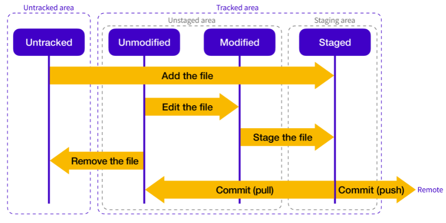

Git이란 개발자의 코드를 효율적으로 관리하기 위해서 개발된 분산형 버전 관리 시스템이다.
버전 관리라는 것 자체가 각 버전 별로 변경된 이력들을 저장하는 작업이라고 할 수 있다.
변경 사항을 저장할 때는 어떤 사항이 변경되었는지 코멘트를 작성한다.
코멘트를 통해서 누가 어떤 파일을 추가, 수정, 삭제했는지 확인 할 수 있다.
작업하는 폴더가 버전 관리를 받게 하기 위해서는 폴더를 Git의 관리 아래에 두어야 한다.
이러한 Git으로 관리되는 폴더를 Git repository라고 한다.
Git repository는 Remote Repository와 Local Repository 두 종류의 저장소를 제공한다.
Local Repository에서 작업하고 작업한 코드를 Remote Repository에 업로드해 여러 사람이 함께 공유할 수 있다.
반대로 Remote Repository에 올려놓은 코드를 Local Repository로 가지고 와서 작업할 수 있다.
Remote Repository는 원격 온라인 서버 상의 저장소이고 여러 사람이 함께 공유가 가능하다.
Local Repository는 내 컴퓨터의 저장소로 내 개인 전용 저장소이다.

Git의 Local Repository에는 Untracked area와 Tracked area가 존재한다.
Untracked area는 Git이 관리하고 있지 않은 영역이고 Tracked area는 Git의 관리를 받을 수 있는 영역이다.
Tracked area는 Unmodified, Modified, Staged 세가지 상태로 나누어진다.
기존에 Commit 했던 파일을 수정하지 않은 상태이다.
기존에 Commit 했던 파일을 수정한 상태이다.
Commit이 가능한 상태이다.
수정한 파일을 Commit 하기 위해서는 Staging area에 올려주는 Add 하는 작업이 필요하다.